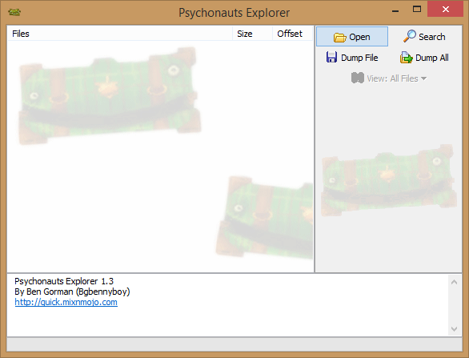
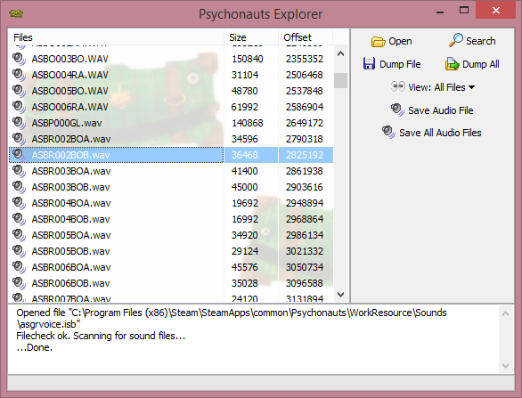

<== Back


Wow, look at that back arrow. I think it's apparent that this will be
the most gorgeous website ever created in 2017. Anyway:
How to Extract the Required Files
-
Download
Psychonauts Explorer. Windows only, I'm afraid.
-
Run the program, click "Open", and navigate to your Psychonauts installation.
-
The Steam version is found under
C:\Program Files (x86)\Steam\SteamApps\common\Psychonauts.
-
Find the file containing the voices for the asylum grounds.
-
In the Steam version, it is called
asgrvoice.isb, as in
ASylum GRounds VOICEs.
-
In the Steam version, it is located under
WorkResource\Sounds\asgrvoice.isb.
-
Select "Save All Audio Files" (not "Dump All"), and give the
program a good place to store them. This operation takes about two minutes on my
computer and produces 120MB of files. 46MB worth of them are unneeded and can
be immediately deleted, leaving 74MB. You could instead save only the needed
audio files one by one (Psychonauts Explorer does not allow multiple selection),
but who has time for that?
-
Now that you have the files, you'll want to isolate Boyd's relevant lines.
You can delete the other files or keep them, just make sure not to send them
to the simulator.
-
They should be numbered from 1 to 202, with two variations each, and have
similar names otherwise. My copy is missing one variant for 71; this is
not a major issue. The simulator will just fill in the other one.
-
In the Steam version, they are named
ASBR001BOA.wav through
ASBR202BOB.wav, with an A.wav (outside Boyd's mind)
and a B.wav (inside Boyd's mind) for each number. AS
stands for ASylum, BO stands for
BOyd, and I suspect that BR stands for
Boyd's Ramblings.
-
The simulator will assume that the files' names contain a single number
between 1 and 202, and end with an
A or a B, as
outlined above. If your files do not match this pattern, please edit them
accordingly. You should have 404 files, but as I said my copy was
missing a 71B, so 403 is acceptable.
-
Go back to the previous page, click the "Select files" button, and select all
404 (or 403) files, then hit "Open".
Congratulations, the simulator should now play voice files.